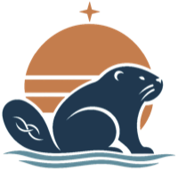

inquiredu.org · Settings
Pick which of your repositories appear in the library, put them in order, and edit their catalog cards. Nothing changes on the live site until you publish.
Paste your publishing key. Anyone can open this page, but only that key loads your hidden cards and publishes changes. Until then, below is the public list, read only.
inquiredu.github.io and site-catalog.It works on those two repositories and nothing else. Only tick Remember on a device you trust: every page under inquiredu.org shares this browser's storage.
Shown cards appear on inquiredu.org in this order. Hidden cards are saved privately in site-catalog and never published. Drag the handle to reorder, or focus it and use the arrow keys.
Not listed keeps a repository off the site and out of every public file. Hidden saves a card privately. Shown puts it on the page. Shortcut: give a repo the GitHub topic shelf and the hourly sync shows it for you.
Unlock settings to see every repository you own.
projects.json: shown cards only.catalog.json: every card, hidden ones included.Copy these files and replace them in each repository yourself. They always match the lists above.